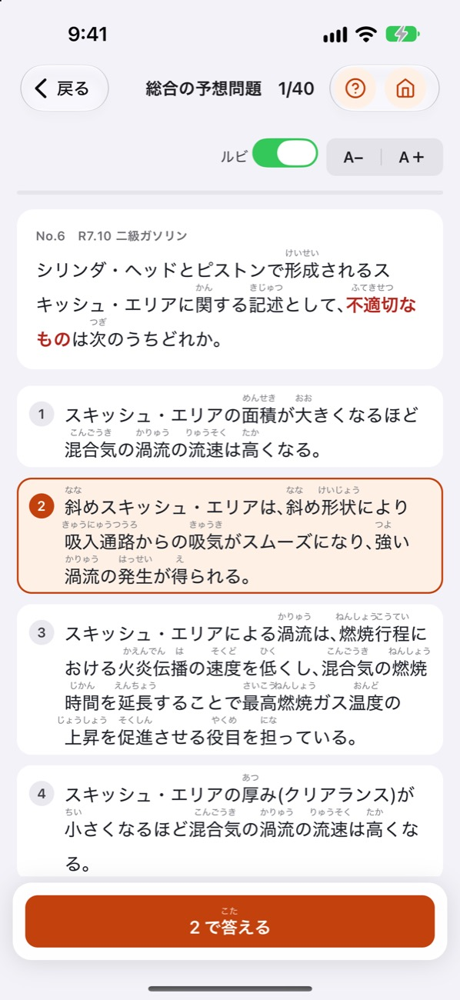
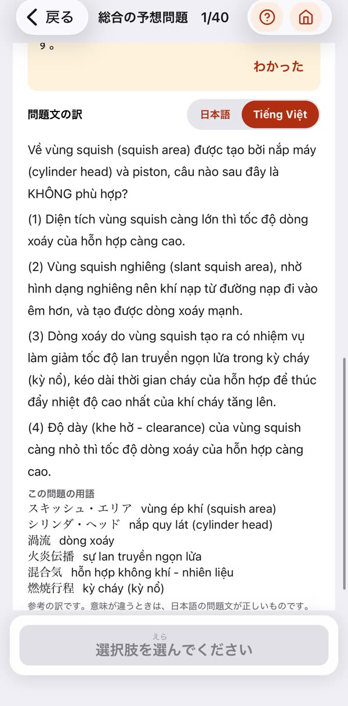
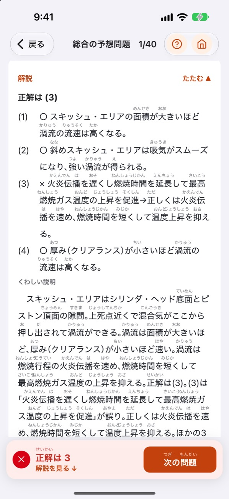
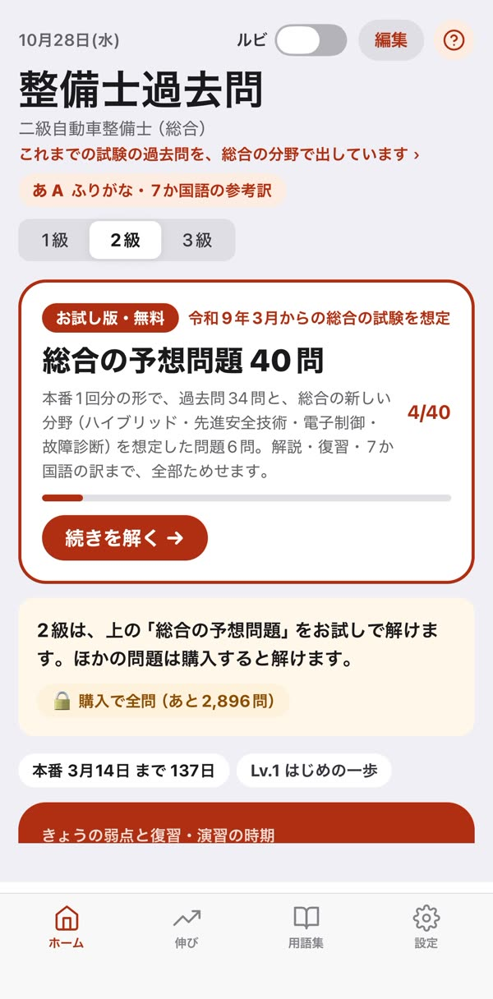

ふりがな整備士
日本語の自動車整備士試験を、ふりがなと母国語の訳で。
1・2・3級の過去問と、選択肢ごとの解説。
App Store で近日公開実際の問題を見る



あなたはどれ？
まず無料で、本番1回分
級ごとの「総合の予想問題」（2級40問・3級30問・1級50問）は、買わなくても全部解けます。解いて、解説を読んで、訳を確かめて、まちがえた問題を復習するところまで、全部試せます。気に入ったら級ごとの買い切り（3級980円・2級1,500円・1級1,800円）。サブスクリプションはありません。
実際の問題を見る
アプリに入っている問題を、ふりがな・正解・選択肢ごとの解説・訳つきでそのまま公開しています。
画面

外国人の受験者へ
試験は日本語だけです。このアプリは、すべての漢字にふりがなを付け、問題文と解説に参考の訳を付けています。訳で意味をつかんだら、最後は日本語の問題文で解けるように練習します。問題ごとに専門用語の訳も出ます。
- English — Past exam questions with furigana, explanations and English translations.
- नेपाली — फुरिगाना, व्याख्या र नेपाली अनुवादसहित पुराना प्रश्नहरू।
- 中文 — 历年真题，附注音假名、解析和中文译文。
- සිංහල — ෆුරිගනා, පැහැදිලි කිරීම් සහ සිංහල පරිවර්තන සමඟ පැරණි ප්රශ්න.
- Tiếng Việt — Đề thi các năm có furigana, giải thích và bản dịch tiếng Việt.
- မြန်မာ — ဖူရီဂါနာ၊ ရှင်းလင်းချက်နှင့် မြန်မာဘာသာပြန်ပါသော ယခင်မေးခွန်းများ။
- Bahasa Indonesia — Soal ujian tahun lalu dengan furigana, penjelasan dan terjemahan bahasa Indonesia.
日本人の受験者へ
2027年3月から2級・3級は「総合」の試験になります。このアプリは、これまでの過去問を総合の分野に並べ直してあるので、ガソリン・ジーゼルを分けずに勉強できます。ふりがなは消せます。文字の大きさ、苦手な問題の復習、本番の形の模擬試験もあります。くわしくは 総合の試験への変更と勉強のしかた。
学校・会社の先生へ
外国人の留学生・社員の指導にお使いください。まとめての導入や、授業での使い方のご相談は nosunosukawa@gmail.com へどうぞ。
要点
- 収録: 自動車整備技能登録試験（学科）の過去問。2級（二級ガソリン・ジーゼル・二輪・シャシ、自動車車体、自動車電気装置）、3級（三級ガソリン・ジーゼル・シャシ・二輪）は平成28年10月〜令和8年10月、1級（一級小型の学科〈筆記〉）は平成29年3月〜令和8年3月。
- ふりがな: 問題・選択肢・解説のすべての漢字に。読みは「自動車整備用語辞典」に合わせています。オン・オフを切り替えられます。
- 7か国語の参考訳: 問題文と解説に、英語・ネパール語・中国語・シンハラ語・ベトナム語・ミャンマー語・インドネシア語。問題ごとに専門用語の訳も出ます。
- 解説: 全問に、選択肢ごとに「なぜ正しいか・誤りか」を書いた独自の解説。正答表と照合しています。
- 総合の試験に対応した並べ方: 2027年3月からの「総合」の分野（エンジン・シャシ・電子制御装置・整備機器と基礎・法規）に並べ直しています。
- 無料で試せる: 級ごとに本番1回分の「総合の予想問題」（2級40問・3級30問・1級50問）。全問は級ごとの買い切り（3級980円・2級1,500円・1級1,800円）。
- ネット不要・アカウント不要: 記録は端末と、使う設定のときはご本人の iCloud に保存。
訳と解説は AI で下書きし、人が問題用紙と照合した参考です。意味が違うときは、日本語の問題文が正しいものです。
だれが作ったか
日本の大学で自動車整備士の教育に携わっている教員（川﨑 信隆）が、日本語だけで行われる国家試験を目指す外国人の留学生・整備士（特定技能など）のために作りました。日本人の受験者にも、ふりがなの切り替え・文字の大きさ・弱点の復習が使えます。
よくある質問
外国人が整備士の国家試験を勉強できるアプリはありますか？
ふりがな整備士は、試験と同じ日本語の問題に、ふりがなと7か国語の参考訳を付けています。本番は日本語なので、訳は「意味をつかむための補助」として使い、最後は日本語の問題文で解けるように作っています。
試験はいつから「総合」に変わりますか？
2級と3級の学科は、令和9年（2027年）3月14日の試験から総合になります。1級（一級小型）は早くて令和10年3月からの見込みです。くわしくは 総合の試験への変更と勉強のしかた。
総合の過去問はありますか？
まだありません。このアプリは、これまでの過去問を総合の分野に並べ直して収録しています。総合の問題が公表されたら加える予定です。
日整連の公式アプリですか？
いいえ。収録している問題は、日本自動車整備振興会連合会がホームページで公開している自動車整備技能登録試験の問題です。このアプリは個人が作成したもので、同連合会の公認・監修を受けたものではありません。
総合の試験への変更と勉強のしかた ・ サポート ・ プライバシーポリシー
English
Furigana Seibishi is an iPhone and iPad app for foreign students and mechanics in Japan preparing for the national automotive mechanic exams (Automotive Maintenance Skill Registration Examination, written part: grade 1 small vehicles, grade 2 and grade 3). It contains past exam questions with an explanation for every choice, furigana on every kanji, and reference translations of questions and explanations in English, Nepali, Chinese, Sinhala, Vietnamese, Burmese and Indonesian. Questions are re-organized into the fields of the new comprehensive ("総合") exam that starts in March 2027. One full practice set per grade is free. Made by a university teacher in mechanic education; not endorsed by JASPA.